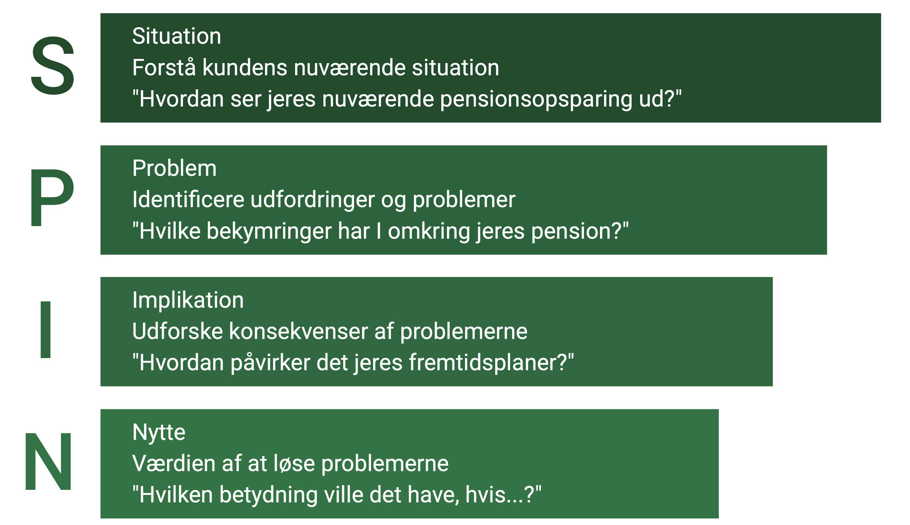

Løsningssalg og SPIN-teknikken
Løsningssalg er en avanceret salgstilgang, der er særligt effektiv i finanssektoren, hvor kundens behov ofte er komplekse og kræver skræddersyede løsninger. SPIN-teknikken er en struktureret metode inden for løsningssalg, der hjælper med at afdække kundens reelle behov.
I dette kapitel ser vi på:
- Grundprincipperne i løsningssalg
- SPIN-teknikkens fire spørgsmålstyper
- Praktisk anvendelse i finansiel rådgivning
- Cases og eksempler
Podcast om løsningssalg og SPIN-teknikken
Podcast om løsningssalg og SPIN-teknikkenGrundprincipperne i Løsningssalg
Løsningssalg adskiller sig fra klassisk salg ved at fokusere på:
| Princip | Beskrivelse | Finansielt Eksempel |
|---|---|---|
| Problemidentifikation | Afdække underliggende problemer og behov | Identificere reelle årsager til økonomisk stress |
| Værdiskabelse | Fokus på langsigtet værdi frem for produkt | Helhedsløsning for pension og investering |
| Samarbejde | Rådgiver som partner i problemløsning | Fælles udvikling af investeringsstrategi |
| Måling | Konkrete resultater og forbedringer | Dokumenteret reduktion i renteudgifter |
Historisk Baggrund & Anekdote
Løsningssalg som koncept voksede frem i 1970'erne og 80'erne som reaktion på mere komplekse B2B-salg, hvor simple produktpræsentationer ikke længere var tilstrækkelige. Sælgere måtte agere mere som konsulenter.
SPIN-teknikken blev udviklet af Neil Rackham og hans firma Huthwaite i 1980'erne efter et omfattende studie af over 35.000 salgssamtaler. Studiet viste, at succesfulde sælgere i komplekse salg stillede markant flere Implikations- og Nytte-spørgsmål end deres mindre succesfulde kolleger. De fokuserede ikke på at "lukke" salget hurtigt, men på at opbygge værdien af deres løsning ved grundigt at afdække konsekvenserne af kundens problemer.
Anekdote: En klassisk historie fra Rackhams forskning handler om en sælger af kopimaskiner. Mindre succesfulde sælgere spurgte typisk: "Er I tilfredse med jeres nuværende kopimaskine?" (Problem-spørgsmål). Top-sælgerne gravede dybere: "Du nævnte, at maskinen ofte bryder ned (Problem). Hvilken effekt har det på jeres medarbejderes arbejdsflow, når de står i kø ved den eneste fungerende maskine? (Implikation). Hvad ville det betyde for produktiviteten, hvis I havde en maskine, der var driftssikker og altid tilgængelig? (Nytte)." Ved at fokusere på konsekvenser og værdi, blev salget langt mere overbevisende.
SPIN-teknikken i Detaljer
SPIN er en systematisk tilgang til behovsafdækning gennem fire typer spørgsmål:
| SPIN Element | Formål | Gode Eksempler | Dårlige Eksempler |
|---|---|---|---|
| Situation | Forstå kundens nuværende situation | "Hvordan ser jeres nuværende pensionsopsparing ud?" | "Har I en pensionsopsparing?" |
| Problem | Identificere udfordringer og problemer | "Hvilke bekymringer har I omkring jeres pension?" | "Er I tilfredse med jeres pension?" |
| Implikation | Udforske konsekvenser af problemerne | "Hvordan påvirker det jeres fremtidsplaner?" | "Er det et problem for jer?" |
| Nytte | Værdien af at løse problemerne | "Hvilken betydning ville det have, hvis...?" | "Skal vi finde en løsning på det?" |

Case: Pensionsrådgivning med SPIN
Udgangspunkt: En selvstændig erhvervsdrivende, 45 år, mødes med en pensionsrådgiver.
SPIN i praksis:
- Situation:
- "Hvordan har du struktureret din pension i dag?"
- "Hvilke typer opsparing har du?"
- "Hvordan ser din virksomheds økonomi ud?"
- Problem:
- "Hvordan påvirker de svingende indtægter din pensionsopsparing?"
- "Hvad gør du i perioder med lavere indtjening?"
- "Hvordan håndterer du risikodækning?"
- Implikation:
- "Hvad betyder det for din pensionsalder?"
- "Hvordan påvirker det din families sikkerhed?"
- "Hvilken effekt har det på din virksomheds skatteoptimering?"
- Nytte:
- "Hvilken værdi ville en mere stabil pensionsopsparing have?"
- "Hvordan ville det påvirke din arbejdsglæde at have en sikker pension?"
- "Hvad ville det betyde for din familie at have bedre risikodækning?"
Resultat: Kunden indser behovet for en mere struktureret pensionsløsning og accepterer et forslag om kombineret pension og erhvervsforsikring.
Case: Rådgivning til Virksomhed (Corporate Finance)
Udgangspunkt: En vækstvirksomhed inden for teknologi overvejer en større investering i nyt produktionsudstyr, men er usikker på finansieringen.
SPIN i praksis (ved Erhvervsrådgiver, Anders):
- Situation:
- "Kan du fortælle lidt om jeres nuværende finansielle struktur? Hvilke lån eller kreditfaciliteter har I?"
- "Hvilke vækstprognoser opererer I med for de næste 3-5 år?"
- "Hvordan finansierer I typisk større investeringer?"
- Problem:
- "Hvilke udfordringer ser I ved at finansiere denne specifikke investering gennem jeres nuværende kanaler?"
- "Bekymrer det jer, at en traditionel bankfinansiering måske lægger pres på jeres likviditet på kort sigt?"
- "Er der specifikke krav fra udstyrsleverandøren ift. betalingsbetingelser, som er svære at møde?"
- Implikation:
- "Hvis I ikke får finansieret udstyret nu, hvilken effekt vil det have på jeres produktionskapacitet og evne til at møde efterspørgslen?"
- "Hvad kan konsekvensen være for jeres markedsandel, hvis konkurrenterne investerer, og I holder igen?"
- "Hvordan påvirker usikkerheden omkring finansiering jeres strategiske planlægning og muligheder for yderligere vækst?"
- Nytte:
- "Forestil jer, at I fik en fleksibel finansieringsløsning, der ikke pressede likviditeten. Hvilke andre vækstmuligheder ville det åbne op for?"
- "Hvor vigtigt ville det være for jer at have en finansieringspartner, der forstår teknologi-sektorens dynamik og kan tilpasse løsningerne?"
- "Hvad ville det betyde for jeres bundlinje på 3 års sigt, hvis I kunne gennemføre denne investering optimalt finansieret?"
Resultat: Virksomhedens ledelse ser værdien i en skræddersyet løsning ud over standard banklån. Anders kan nu præsentere en kombination af leasing og vækstkaution, der adresserer de identificerede implikationer og nytte-punkter.
Case: Wealth Management / Private Banking
Udgangspunkt: En formuende kunde, Hanne (60 år), har solgt sin virksomhed og ønsker rådgivning om placering af provenuet og planlægning af sit otium.
SPIN i praksis (ved Private Banker, Sofie):
- Situation:
- "Nu hvor virksomheden er solgt, hvordan ser din nuværende formuefordeling ud?"
- "Hvilke tanker har du gjort dig om, hvordan dit liv skal se ud de næste 10-20 år?"
- "Har du allerede en pensionsordning eller andre investeringer?"
- Problem:
- "Hvad bekymrer dig mest, når du tænker på at skulle leve af din formue frem for en løbende indkomst?"
- "Er der udfordringer forbundet med at sikre, at formuen bevarer sin købekraft på lang sigt (inflation)?"
- "Er du bekymret for kompleksiteten i at administrere en større, diversificeret portefølje selv?"
- Implikation:
- "Hvis inflationen udhuler værdien, hvordan vil det påvirke den livsstil, du ønsker at opretholde?"
- "Hvad kan konsekvenserne være – både økonomisk og tidsmæssigt – hvis du selv skal håndtere alle investeringsbeslutninger og administration?"
- "Hvis formuen ikke er struktureret optimalt i forhold til skat og eventuel arv, hvilke utilsigtede konsekvenser kan det få for dig eller dine arvinger?"
- Nytte:
- "Hvilken værdi ville det have for dig at have en klar, langsigtet plan for formuen, der sikrer din ønskede levestandard og tager højde for inflation og skat?"
- "Hvad ville det betyde for din tryghed og frihed, hvis du havde en professionel partner til at overvåge og administrere dine investeringer?"
- "Hvor vigtigt er det for dig at vide, at der er taget hånd om eventuel formueoverdragelse til næste generation på den mest hensigtsmæssige måde?"
Resultat: Hanne indser kompleksiteten og værdien af professionel rådgivning. Sofie kan præsentere en helhedsorienteret løsning for formuepleje, investering og generationsskifteplanlægning, der direkte adresserer Hannes bekymringer og ønsker.
Case: Forsikringsrådgivning til Produktionsvirksomhed
Udgangspunkt: En mellemstor produktionsvirksomhed, 'MetalWork A/S', skal forny deres erhvervsforsikringer og mødes med en ny forsikringsrådgiver.
SPIN i praksis (ved Forsikringsrådgiver, Michael):
- Situation:
- "Kan du beskrive jeres produktionsproces og de primære maskiner I anvender?"
- "Hvilke typer kunder handler I primært med, og hvor er de geografisk placeret?"
- "Hvordan ser jeres nuværende forsikringsdækning ud, og hvornår blev den sidst gennemgået?"
- Problem:
- "Har I oplevet produktionsstop pga. maskinnedbrud inden for de sidste par år? Hvad var årsagen?"
- "Er I bekymrede for potentielle produktansvarssager, hvis et af jeres produkter forårsager skade hos en kunde?"
- "Hvordan håndterer I risikoen for datatab eller cyberangreb i jeres ordresystemer?"
- Implikation:
- "Hvis en central maskine bryder ned i en uge, hvad vil det betyde for jeres leveringsevne og omsætning? Hvad er de økonomiske konsekvenser pr. dag?"
- "Hvilken effekt ville en større produktansvarssag have på jeres omdømme og likviditet, udover selve erstatningskravet?"
- "Hvis jeres ordresystem er nede pga. et cyberangreb, hvordan påvirker det jeres kundeservice og salgsproces? Hvor længe kan I tåle at være offline?"
- Nytte:
- "Hvilken værdi ville det have for jer at have en driftstabsforsikring, der dækker jeres faste omkostninger og tabt fortjeneste under et produktionsstop?"
- "Hvad ville det betyde for jeres tryghed at vide, I har en udvidet produktansvarsforsikring, der dækker selv komplekse sager, inkl. juridisk bistand?"
- "Hvor vigtigt er det for jer at have en cyberforsikring, der ikke kun dækker tabet, men også hjælper med at genetablere systemerne og håndtere krisen?"
Resultat: Virksomhedens ledelse får en dybere forståelse for de potentielle konsekvenser af utilstrækkelig dækning. Michael kan sammensætte en skræddersyet forsikringspakke, der specifikt adresserer de risici og den værdi, der blev afdækket gennem SPIN-samtalen.
Case: Salg af Rådgivningsydelser (Revision/Konsulent)
Udgangspunkt: En revisor/konsulent, Louise, er i dialog med en potentiel kunde, en servicevirksomhed, der overvejer at outsource deres bogholderi og lønadministration.
SPIN i praksis (ved Revisor/Konsulent, Louise):
- Situation:
- "Hvordan håndterer I bogføring og lønadministration internt i dag? Hvilke systemer bruger I?"
- "Hvor mange ressourcer (timer/medarbejdere) bruger I på disse opgaver om måneden?"
- "Hvordan sikrer I overholdelse af deadlines for moms, skat og lønafregning?"
- Problem:
- "Hvilke udfordringer oplever I med de nuværende processer? Er der flaskehalse eller manuelle fejl?"
- "Er det svært at følge med i de konstante ændringer i lovgivning inden for moms, skat og ferielov?"
- "Bruger nøglemedarbejdere tid på administrative opgaver, som de hellere skulle bruge på kerneforretningen?"
- Implikation:
- "Hvad er konsekvenserne, hvis I overser en deadline eller laver fejl i indberetningerne (f.eks. bøder, renter)?"
- "Hvis I ikke har fuldt opdateret viden om lovgivningen, hvilken risiko løber I så for f.eks. forkert feriepengeberegning eller momsfradrag?"
- "Hvad koster det virksomheden i tabt potentiel omsætning eller udvikling, når nøglepersoner er bundet af administration?"
- Nytte:
- "Hvilken værdi ville det have for jer at vide, at bogføring og løn altid er korrekt og afleveret til tiden, uden at I selv skal bekymre jer om det?"
- "Hvad ville det betyde for jeres fokus på kerneforretningen, hvis I kunne frigøre X antal timer om måneden fra administration?"
- "Hvor vigtigt er det for jer at have adgang til specialiseret viden og sparring om optimering af jeres økonomiske processer?"
Resultat: Kunden ser de konkrete omkostninger (både direkte og indirekte) ved den nuværende løsning og værdien af outsourcing. Louise kan præsentere en serviceaftale, der løser kundens problemer og leverer den ønskede nytte (frigjort tid, sikkerhed, adgang til ekspertise).
Praktiske Tips til SPIN i Finanssektoren
Sådan optimerer du din brug af SPIN:
- Forberedelse: Research kundens situation før mødet
- Timing: Følg spørgsmålenes naturlige progression
- Lytning: Noter nøgleord og følg op på svar
- Dokumentation: Brug svarene i den endelige løsning
Typiske Fejl at Undgå
| SPIN Fase | Typisk Fejl | Konsekvens | Bedre Tilgang |
|---|---|---|---|
| Situation | For mange lukkede spørgsmål | Overfladisk forståelse | Brug åbne spørgsmål der inviterer til dialog |
| Problem | Spring direkte til løsninger | Misser underliggende problemer | Udforsk problemet grundigt før løsningsforslag |
| Implikation | Skabe unødig frygt | Kunden bliver defensiv | Balance mellem realisme og konstruktiv dialog |
| Nytte | Overdrive fordele | Tab af troværdighed | Fokuser på realistiske og målbare fordele |